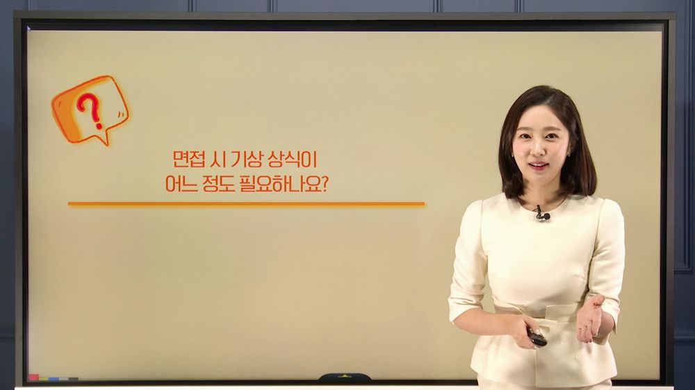
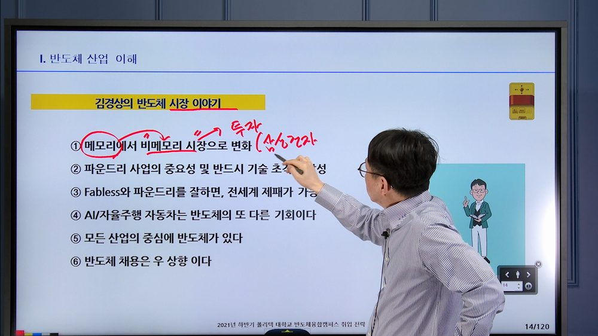
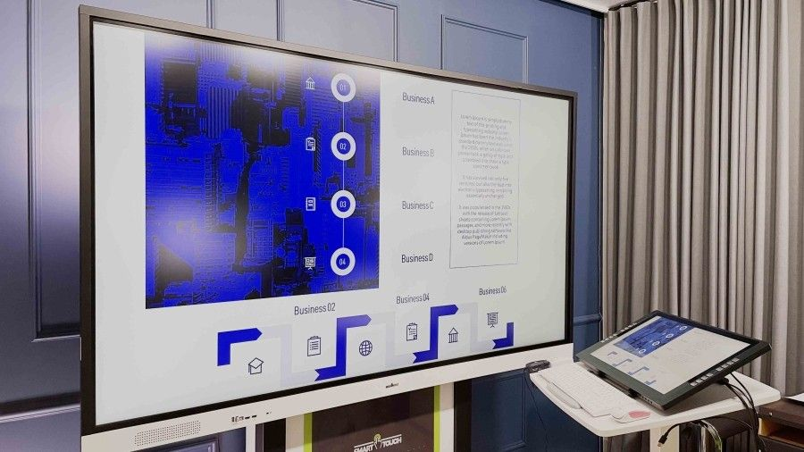
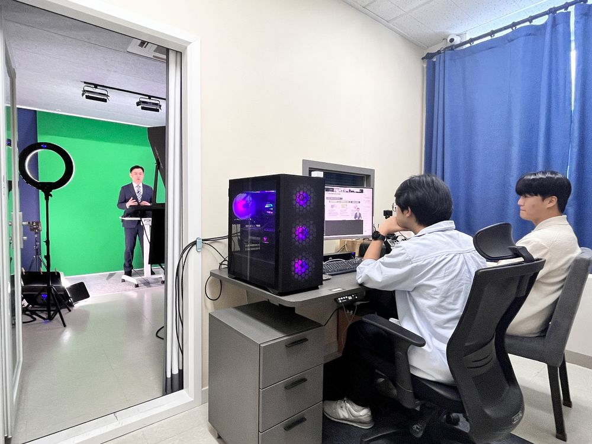

01
Lecture Specialized강의 전문 스튜디오
🎓이러닝 강의 촬영 전문
🏆국내 최고 시설·편리함
⚡강의 촬영에 최적화된 환경
02
Professional Lighting얼굴이 잘 나오는 스튜디오
💡레인조명·링조명·아이유라이트
✨다양한 종류의 조명 보유
🙂자신감 있는 촬영 결과물


03
E-Board & Tablet촬영마다 내 맘대로 판서!
🖥️86인치 대형 전자칠판
✏️22인치 액정타블렛
🔄동시 사용 가능
04
Sound Proofing음향까지 신경쓴 스튜디오
🔇천장·벽면 차음·흡음 처리
🎤최상급 마이크 사용
🎧노이즈 최소화


05
Full SupportPD 상시 대기·올인원
🎬전문 PD 상시 대기
📹촬영에만 집중 가능
🛠️세팅·모니터링·기술 지원